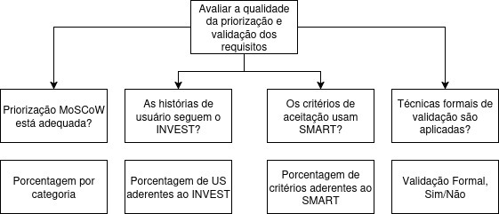

Modelo GQM
O modelo GQM (Goal-Question-Metric) é uma abordagem estruturada para definir e aplicar métricas em projetos de software. Seu principal objetivo é garantir que as medições realizadas estejam diretamente alinhadas com os objetivos do projeto, promovendo clareza, foco e rastreabilidade na análise da qualidade.
A estrutura do GQM é composta por três níveis:
- Goal (Objetivo): Define o que se deseja alcançar ou compreender — por exemplo, avaliar a qualidade da priorização dos requisitos ou a clareza das histórias de usuário.
- Question (Questão): Desdobra o objetivo em perguntas específicas que orientam a análise.
- Metric (Métrica): Especifica quais dados serão coletados para responder objetivamente às questões formuladas.
No contexto do projeto AgroMart, o modelo GQM foi utilizado para estruturar a avaliação da qualidade dos requisitos e funcionalidades da plataforma. Essa abordagem permitiu à equipe alinhar a coleta de dados com os objetivos reais do projeto, garantindo que os resultados obtidos sirvam de base para decisões mais fundamentadas ao longo do desenvolvimento.
Fase de definição
Objetivo de negócio do AGROMART:
- Analisar: AgroMart
- Para o propósito de: Avaliar os requisitos
- Com respeito a: Verificar o processo de elicitação e análise dos requisitos
- Do ponto de vista dos: Alunos da disciplina de qualidade de software
- No contexto de: Qualidade de software
Priorização
Goals:
Avaliar a priorização dos requisitos funcionais utilizando a técnica MoSCoW, com o propósito de garantir uma seleção equilibrada e estratégica das funcionalidades.
Questions:
- A classificação de prioridade do RF faz sentido considerando o valor que esse recurso oferece ao usuário?
- A distribuição dos requisitos entre as categorias MoSCoW está balanceada?
- Os requisitos "Must" estão claramente justificados como essenciais para o funcionamento mínimo do sistema?
Métricas:
- Métrica 1: Porcentagem de requisitos por categoria (Must, Should, Could, Won't).
- Métrica 2: Número de "Must" com justificativa clara de negócio.
Objetivo de medição 1
Q1: A classificação de prioridade do RF faz sentido considerando o valor que esse recurso oferece ao usuário?
| Requisito | Descrição | Categoria |
|---|---|---|
| RF6 | O co-agricultor deve ser capaz de escolher o método de pagamento | Could |
| RF8 | O co-agricultor deve ser capaz de entrar em contato com o Administrador | Won't have |
| RNF10 | O co-agricultor deve saber os itens que virão na cesta da semana | Could |
Hipótese Q1:
A priorização atual dos requisitos RF6, RF8 e RNF10 (classificados como Could/Won't) pode não refletir o real valor percebido pelos usuários finais; caso os usuários atribuam maior importância a esses requisitos, suas prioridades deverão ser revistas para garantir alinhamento entre valor de negócio e planejamento de entrega.
Q2: A distribuição dos requisitos entre as categorias MoSCoW está balanceada?
Hipótese Q2: Porcentagem de requisitos por categoria (Must, Should, Could, Won't).
Análise:
- 22 requisitos como Must (~81%).
- Nenhum requisito classificado como Should.
- 1 requisito classificado como Could (~4%).
- 3 requisitos classificados como Won't have (~11%).
Observação: O requisito RF-9 está ausente na tabela, é importante revisar a numeração para garantir a consistência e rastreabilidade dos requisitos.
Q3: Os requisitos "Must" estão claramente justificados como essenciais para o funcionamento mínimo do sistema?
Hipótese Q3:
Número de "Must" com justificativa clara de negócio.
Análise:
Não. Nenhum dos requisitos classificados como "Must" na documentação apresenta justificativas explícitas que expliquem por que são considerados essenciais.
Objetivo de medição 2
Q1: As histórias de usuário demonstram uma abstração do requisito permitindo analisar como uma funcionalidade que permeia a utilização do produto pelo usuário?
Histórias de Usuário - Administrador
- Login
- US16: Realizar login no Strapi
- US17: Realizar login no Aplicativo
- Instalar
- US18: Possuir um tutorial
- Strapi - Gerenciar
- US19: Interagir com Produtos
- US20: Interagir com Planos
- US21: Interagir com Cestas
- US22: Interagir com Co-agricultor
- US23: Interagir com Lojas
- US24: Criar Notificações
- US25: Interagir com Pedidos
- US26: Visualizar endereços
Hipótese 1:
As histórias de usuário foram analisadas verificando a aderência aos critérios INVEST.
| US's | Independente | Negociável | Valiosa | Estimável | Pequena | Testável |
|---|---|---|---|---|---|---|
| US16 | ✅ | ✅ | ✅ | ✅ | ✅ | ✅ |
| US17 | ✅ | ✅ | ✅ | ✅ | ✅ | ✅ |
| US18 | ✅ | ✅ | ✅ | ❌ | ✅ | ❌ |
| US19 | ❌ | ✅ | ✅ | ✅ | ❌ | ✅ |
| US20 | ❌ | ✅ | ✅ | ✅ | ❌ | ✅ |
| US21 | ❌ | ✅ | ✅ | ✅ | ❌ | ✅ |
| US22 | ❌ | ✅ | ✅ | ✅ | ❌ | ✅ |
| US23 | ✅ | ✅ | ✅ | ✅ | ❌ | ❌ |
| US24 | ✅ | ✅ | ✅ | ✅ | ✅ | ✅ |
| US25 | ❌ | ✅ | ✅ | ✅ | ❌ | ❌ |
| US26 | ✅ | ✅ | ✅ | ✅ | ✅ | ✅ |
Q2: Os critérios de aceitação das histórias de usuário são claros, objetivos e testáveis garantindo métricas que sustentam a implementação e verificação?
Exemplos de critérios de aceitação:
- US16: Deve efetuar o login.
- US17: Deve efetuar o login. Deve ter o código da CSA.
- US18: Tutorial disponível na documentação. Ter passo a passo. Ser de fácil compreensão.
- US19: Deve estar logado. Deve ser o responsável pela CSA. Deve ser capaz de adicionar, editar e visualizar produtos.
- US20 a US26: Seguem o mesmo padrão: login, responsabilidade pela CSA e ações específicas.
Hipótese 2:
Os critérios de aceitação foram analisados com base nos princípios da técnica SMART.
| US's | Específico | Mensurável | Alcançável | Relevante | Temporal |
|---|---|---|---|---|---|
| US16 | ✅ | ✅ | ✅ | ✅ | ❌ |
| US17 | ✅ | ✅ | ❓ | ✅ | ❌ |
| US18 | ✅ | ✅ | ✅ | ✅ | ❌ |
| US19 | ✅ | ✅ | ❓ | ✅ | ❌ |
| US20 | ✅ | ✅ | ❓ | ✅ | ❌ |
| US21 | ✅ | ✅ | ❓ | ✅ | ❌ |
| US22 | ✅ | ✅ | ❓ | ✅ | ❌ |
| US23 | ✅ | ✅ | ❓ | ✅ | ❌ |
| US24 | ✅ | ❓ | ❓ | ✅ | ❌ |
| US25 | ✅ | ❓ | ❓ | ✅ | ❌ |
| US26 | ✅ | ❓ | ❓ | ✅ | ❌ |
Objetivo de medição 3
Q3: As técnicas de validação utilizadas no projeto são suficientes sob a perspectiva dos processos da Engenharia de Requisitos?
Hipótese 3:
Atualmente, a única técnica de validação identificada na documentação é a validação informal, descrita na seção de validações. Essa abordagem, por si só, geralmente não é suficiente para garantir a qualidade dos requisitos. Recomenda-se a adoção de um checklist estruturado com critérios claros, que ajude a minimizar erros durante a validação dos itens.
Observa-se que já existe um checklist voltado à verificação de histórias de usuário, porém este poderia ser aprimorado. Em vez de utilizar apenas os critérios "Os itens que representam maior valor para o negócio são bem priorizados?" e "As User Story foram elaboradas seguindo um modelo e/ou um padrão?", sugerimos a adoção do modelo INVEST (Independente, Negociável, Valioso, Estimável, Pequeno e Testável), o que proporcionaria uma avaliação mais criteriosa e alinhada às boas práticas da Engenharia de Requisitos.

Tabela de contribuição
| Matrícula | Nome completo | Contribuição (%) |
|---|---|---|
| 221022462 | Arthur da Silveira Sousa | 16,6 |
| 221022515 | Danilo Naves do Nascimento | 16,6 |
| 180100271 | Emivalto da Costa Tavares Junior | 16,6 |
| 222014859 | Ian Costa Guimarães | 16,6 |
| 200020323 | Jefferson Sena Oliveira | 16,6 |
| 211062016 | José André Rabelo Rocha | 16,6 |